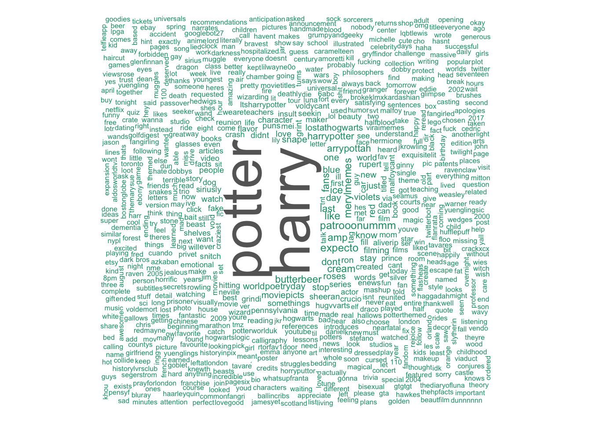

Harry Potter
Author: J.K. Rowling
“But you know, happiness can be found even in the darkest of times, if one only remembers to turn on the light.”
― J.K. Rowling, Harry Potter and the Prisoner of Azkaban
Summary
Harry Potter’s life is miserable. His parents are dead and he’s stuck with his heartless relatives, who force him to live in a tiny closet under the stairs. But his fortune changes when he receives a letter that tells him the truth about himself: he’s a wizard. A mysterious visitor rescues him from his relatives and takes him to his new home, Hogwarts School of Witchcraft and Wizardry.
After a lifetime of bottling up his magical powers, Harry finally feels like a normal kid. But even within the Wizarding community, he is special. He is the boy who lived: the only person to have ever survived a killing curse inflicted by the evil Lord Voldemort, who launched a brutal takeover of the Wizarding world, only to vanish after failing to kill Harry.
Though Harry’s first year at Hogwarts is the best of his life, not everything is perfect. There is a dangerous secret object hidden within the castle walls, and Harry believes it’s his responsibility to prevent it from falling into evil hands. But doing so will bring him into contact with forces more terrifying than he ever could have imagined.
Full of sympathetic characters, wildly imaginative situations, and countless exciting details, the first installment in the series assembles an unforgettable magical world and sets the stage for many high-stakes adventures to come.

## [1] "skyyy_04: RT @ArryPottah: The Harry Potter hair evolution. https://t.co/5x92MvyvEZ"
## [1] "JusticeRabbit: RT @maniadrone: This is just like in Harry Potter whenDumbledore launched missles into Syria"
## [1] "shainedlssnts: RT @ArryPottah: What the main Harry Potter cast answered when asked what their favorite line their character spoke was. https://t.co/TYparb…"
## [1] "MhairinotVari: RT @ArryPottah: What the main Harry Potter cast answered when asked what their favorite line their character spoke was. https://t.co/TYparb…"
## [1] "ThingsSratsLike: RT @ArryPottah: Harry Potter Street Art. \xed\xa0\xbc\xed\xbe\xa8 https://t.co/S4kDrxLIm0"
## [1] "trickpatz: RT @ArryPottah: The intros and ends to every Harry Potter movie made. https://t.co/A8kA0eUsMj"
## [1] "timaarely: RT @ltsHarryPotter: Forcing my love of Harry Potter onto my friends like https://t.co/d0Jep6eBkY"
## [1] "AnnabelleMatice: RT @ltsHarryPotter: Forcing my love of Harry Potter onto my friends like https://t.co/d0Jep6eBkY"
## [1] "mindxbonex: RT @lilyandjames: HARRY POTTER HAS NEVER FORGIVEN HIMSELF FOR SIRIUS' DEATH HE THINKS IT WAS HIS FAULT AND Y'ALL THINK HE IS SELFISH AND TH…"
## [1] "areanem: I liked a @YouTube video https://t.co/DmiTBVzWUE XBOX SCORPIO VS PS4 PRO COMPARISON, A HARRY POTTER RPG? & MORE"
## [1] "ColeDaigneault: RT @maniadrone: This is just like in Harry Potter whenDumbledore launched missles into Syria"
## [1] "daniellecroce: RT @ltsHarryPotter: Forcing my love of Harry Potter onto my friends like https://t.co/d0Jep6eBkY"
## [1] "TheMindOfBA: RT @AlexSchmidty: FACT: in the evil community, Harry Potter books are called \"Tom Riddle: Baby Hunter\""
## [1] "EvaaSosa: RT @ltsHarryPotter: When someone says that Harry Potter is just for children https://t.co/vGcQOKK7nW"
## [1] "hemster: RT @PrekshaJoshi: What are some of the most believable Harry Potter theories? by Sabesh Bharathi https://t.co/CxemQyknW8"
## [1] "alicia_marcotte: RT @ltsHarryPotter: Forcing my love of Harry Potter onto my friends like https://t.co/d0Jep6eBkY"
## [1] "cassiansrebels: RT @chrctraesthetic: Jacob Kowalski // Fantastic Beasts and Where to Find Them (harry potter universe) https://t.co/5HG1Gl6n3l"
## [1] "emilse_monje2: RT @HogwartsLogic: When someone says that Harry Potter is just for children https://t.co/JVhD5MOpBr"
## [1] "anaerrmazingg: RT @ArryPottah: Me trying to explain Harry Potter to a muggle https://t.co/3x1Fg4UuEW"
## [1] "MalfoyReigns: RT @LostAtHogwarts: \"I don't like Harry Potter\" https://t.co/ydDlIuU79f"##
## The downloaded binary packages are in
## /var/folders/ny/hkylpsnn3qs2pg8wdvtfwx_m0000gn/T//Rtmp1CEuYO/downloaded_packages
Key Themes
- orphan
- magic
- bookstomovies
Extras
- Time’s “100 Best Young Adult Books of All Time”
summary from Goodreads